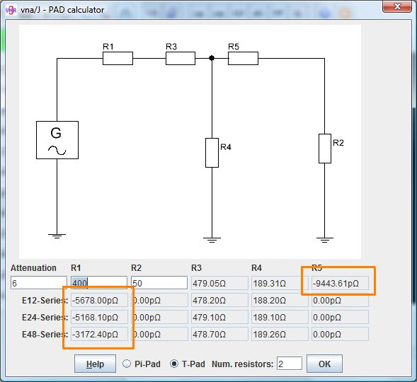
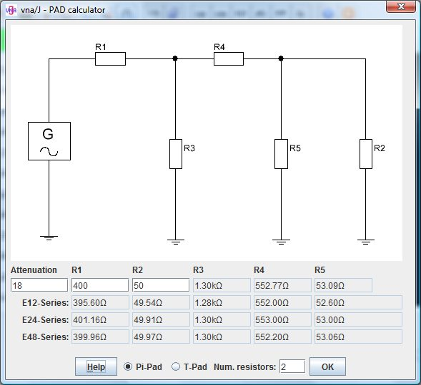
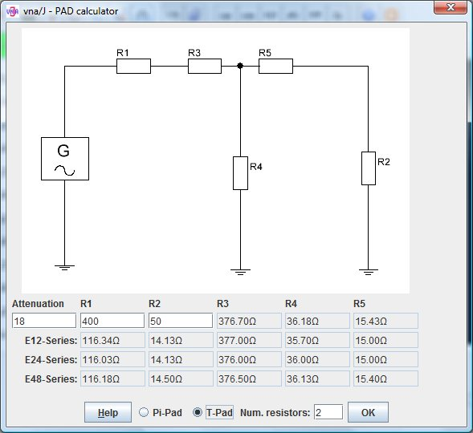

Enter the requested attenuation in the input field Attenuation
Enter the requested input resistance in the field R1
Enter the requested output resistance in the field R2
Enter the maximum number of resistor which are used to build the exact calculated resistors.
To switch between T-type and Pi-type pads, use the radio-buttons
The exact calculated resistor values for R3m R4 and R5 are display right to the entry fields of R1 and R2.
In the line E12-Series the possible resistor values for R3, R4 and R5 are displayed for the resistor series E12.
In the line E24-Series the possible resistor values for R3, R4 and R5 are displayed for the resistor series E24.
In the line E48-Series the possible resistor values for R3, R4 and R5 are displayed for the resistor series E48.
For each resistor series also the effective input resistance R1 and output resistance R2 are calculated and displayed
In the tooltip text of each resistor R3, R4, R5 the combination of 1 to n resistors from this series is displayed.
Lets take this as an example: Pi-pad, Attenuation=18dB, R1=400Ohm, R2=50Ohm, max. #resistors=2
It is not possible to calculate any combination of attenuation, input- and output-impedance.
If calculation fails, negative resistor values are displayed.



This calculation is based on the excellent articel from Ulrich Fleischmann, DL9LX in the German magazine CQ DL 2-2011 pp. 115.